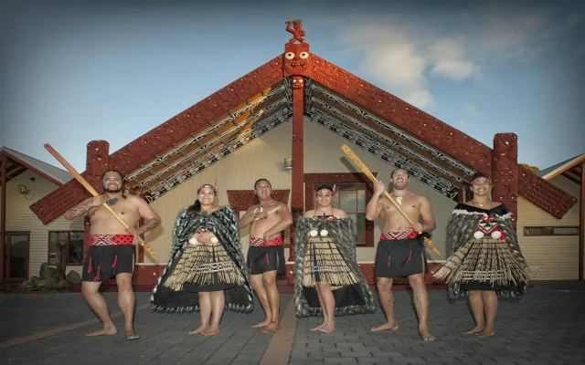
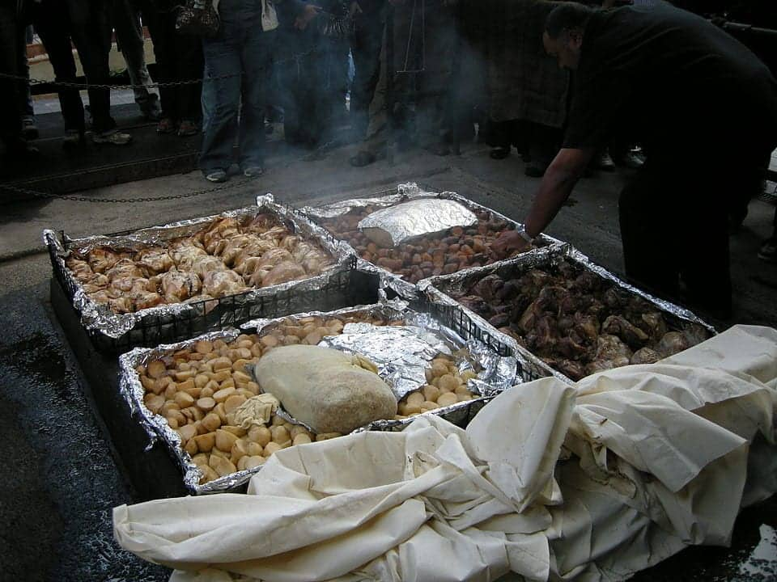

Hobbiton Movie Set
The Hobbiton Movie Set, located in Matamata, New Zealand, is a 12-acre permanent tourist attraction featuring 44 detailed Hobbit holes, the Green Dragon™ Inn, and the Party Tree from The Lord of the Rings and The Hobbit films. Visitors can tour the picturesque sheep farm, explore Bag End, and enjoy beverages at the Green Dragon.

Queenstown
Queenstown, located on the shores of Lake Wakatipu in New Zealand's South Island, is widely celebrated as the "Adventure Capital of the World". Surrounded by the dramatic Southern Alps, it is a premier destination for both high-adrenaline thrills and world-class relaxation.

Milford Sound
Milford Sound (Piopiotahi) is a breathtaking fiord in New Zealand’s South Island, located in the heart of the Fiordland National Park, a UNESCO World Heritage site. Known for its inky waters, towering mountains like Mitre Peak, and numerous waterfalls, it is a top destination for boat cruises, kayaking, and viewing wildlife such as dolphins and penguins.

Māori Culture
Māori culture is the indigenous Polynesian culture of New Zealand (Aotearoa), established around the 13th century. It is defined by a deep spiritual connection to the land (whenua), rich oral traditions, intricate arts like carving (whakairo) and weaving (raranga), and the Te Reo Māori language. Core values include hospitality (manaakitanga) and community connection, often practiced through the marae (meeting grounds).

Matariki
Matariki is the Māori name for a cluster of stars (also known as the Pleiades) that rises in the mid-winter sky, marking the start of the Māori New Year. Traditionally, it is a time to remember those who have passed, celebrate the present with family and friends, and look forward to the year ahead.

Hāngī
Hāngī is a traditional New Zealand Māori method of cooking food using heated, volcanic rocks buried in an underground pit oven (or umu). Meats like pork, chicken, and mutton, along with root vegetables (kūmara, potato, pumpkin), are wrapped, placed in baskets, and steamed for several hours, resulting in a tender, earthy, and smoky flavor.